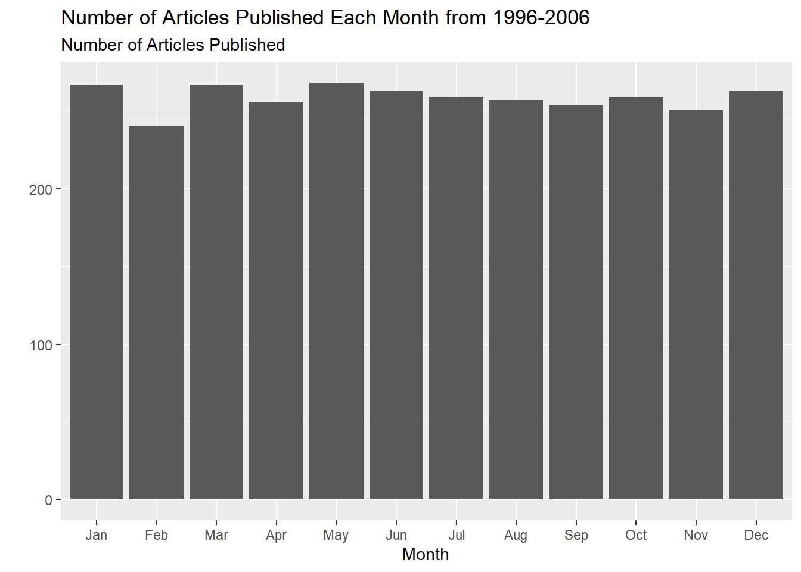

This analysis uses the NYTimes dataset from the RTextTools package. The dataset contains article IDs, publication dates, article headlines, article subjects, and topic codes for articles from the New York Times from 1996 to 2006. The dataset was compiled by Professor Amber E. Boydstun at the University of California, Davis.
The following graph shows the number of articles published each month from 1996-2006. Upon first inspection, February has the least number of articles published, and January, March, May, and December seem to have the most number of articles published. If we stop to consider why this might be, we quickly notice that February has the fewest days and January, March, May, and December all have 31 days. We inspect this further in the following graph.
# A tibble: 3,104 × 5
Article_ID Date Title Subject Topic.Code
<int> <fct> <fct> <fct> <int>
1 41246 1-Jan-96 Nation's Smaller Jails Struggle To C… Jails … 12
2 41257 2-Jan-96 FEDERAL IMPASSE SADDLING STATES WITH… Federa… 20
3 41268 3-Jan-96 Long, Costly Prelude Does Little To … Conten… 20
4 41279 4-Jan-96 Top Leader of the Bosnian Serbs Now … Bosnia… 19
5 41290 5-Jan-96 BATTLE OVER THE BUDGET: THE OVERVIEW… Battle… 1
6 41302 7-Jan-96 South African Democracy Stumbles on … politi… 19
7 41314 8-Jan-96 Among Economists, Little Fear on Def… econom… 1
8 41333 10-Jan-96 BATTLE OVER THE BUDGET: THE OVERVIEW… budget… 1
9 41344 11-Jan-96 High Court Is Cool To Census Change census… 20
10 41355 12-Jan-96 TURMOIL AT BARNEYS: THE DIFFICULTIES… barney… 15
# ℹ 3,094 more rows
#Adding a column onlyMonth that has extracts the "Jan" or similar from the date column using regular expressions. Converting this column into factors allows us to order the months chronologically. I grouped by this column and then plotted the number of articles published each month to get the following graph:grouped_month <- NYTimes |>mutate(onlyMonth =factor(str_extract(Date, "(?<=-)[a-z|A-Z]+"), levels =c("Jan", "Feb", "Mar", "Apr", "May", "Jun", "Jul", "Aug", "Sep", "Oct", "Nov", "Dec"))) |>group_by(onlyMonth)#NYTimes <- fct_relevel(onlyMonth, levels = c("Jan", "Feb", "Mar", "Apr", "May", "Jun", "Jul", "Aug", "Sep", "Oct", "Nov", "Dec"))ggplot(grouped_month, aes(x = onlyMonth)) +geom_bar() +labs(x ="Month", y ="", subtitle ="Number of Articles Published", title ="Number of Articles Published Each Month from 1996-2006")

The graph below more clearly shows that more articles are published during months with more days. Although we can’t prove why this is, the New York Times is published every day, meaning that months with more days likely have a higher quantity of articles simply because they have more editions published.
#Groups the months based on the number of days in each month, and then computes the average number of articles published in each month in the period from 1996-2006.new_grouped_month <- grouped_month |>mutate(numDays =ifelse(str_detect(onlyMonth, "Feb"), "28/29", ifelse(str_detect(onlyMonth, "Jan|Mar|May|Jul|Aug|Oct|Dec"), "31", "30"))) |>group_by(numDays) |>summarize(count =n()) |>mutate(average =ifelse(numDays =="31", count/7, ifelse(numDays =="30", count/4, count)))ggplot(new_grouped_month, aes(x = numDays, y = average)) +geom_col() +labs(x="Number of Days in Month", y ="", subtitle ="Average Number of Articles Published", title ="Number of Articles Published Monthly Based on the Length of the Month")
Article_ID Date
1 40108 10-May-97
2 44917 4-Nov-97
3 31857 28-Apr-98
4 33691 8-Jan-99
5 33721 12-Jan-99
6 18984 30-Mar-01
7 24216 3-Sep-02
8 6110 22-Sep-02
9 6136 10-Oct-02
10 16977 13-Oct-02
11 6151 23-Oct-02
12 20550 23-Jan-03
13 17689 23-Feb-03
14 6295 21-Mar-03
15 6300 22-Mar-03
16 7866 1-Apr-03
17 6826 5-Apr-03
18 8147 14-Apr-03
19 7520 18-Apr-03
20 7522 20-Apr-03
21 7885 1-May-03
22 7530 3-May-03
23 7890 11-May-03
24 6373 11-Jun-03
25 6840 18-Jun-03
26 7545 21-Jul-03
27 6396 10-Aug-03
28 6402 22-Aug-03
29 24819 5-Sep-03
30 7563 30-Sep-03
31 17692 1-Oct-03
32 6421 23-Oct-03
33 6436 1-Dec-03
34 6444 17-Dec-03
35 7573 5-Jan-04
36 8163 29-Jan-04
37 8061 7-Feb-04
38 7921 9-Feb-04
39 7931 1-Mar-04
40 7933 4-Mar-04
41 7575 6-Mar-04
42 6455 17-Mar-04
43 8099 20-Mar-04
44 6248 5-Apr-04
45 29994 24-Apr-04
46 6478 25-Apr-04
47 7046 11-May-04
48 7059 18-May-04
49 7591 27-May-04
50 7597 9-Jun-04
51 7945 12-Jun-04
52 5684 11-Jul-04
53 6258 21-Sep-04
54 7434 8-Oct-04
55 6889 24-Oct-04
56 7315 25-Oct-04
57 7437 31-Oct-04
58 7610 5-Nov-04
59 7488 4-Jan-05
60 25665 20-Jan-05
61 7626 26-Jan-05
62 7639 31-Jan-05
63 7658 8-Apr-05
64 7988 23-May-05
65 19888 14-Nov-05
66 8177 18-Nov-05
67 7178 25-Nov-05
68 7454 28-Nov-05
69 7237 30-Nov-05
70 6632 2-Dec-05
71 6635 5-Dec-05
72 7686 15-Dec-05
73 36836 6-Feb-06
74 36994 1-Mar-06
75 37184 29-Mar-06
76 37464 9-May-06
77 37644 4-Jun-06
78 37774 23-Jun-06
79 38014 29-Jul-06
80 38024 30-Jul-06
81 38369 19-Sep-06
82 38519 11-Oct-06
83 38589 21-Oct-06
84 38760 13-Nov-06
85 38960 13-Dec-06
86 38990 17-Dec-06
87 39000 19-Dec-06
Title
1 Citing Security, U.S. Jails Iraqis It Used in Plot
2 Iraq Threatens To Shoot Down U.S. Spy Planes
3 Restrictions on Iraq Will Stay in Force, U.N. Council Rules
4 U.S. Used U.N. Team to Place Spy Device in Iraq, Aides Say
5 U.S. More Isolated In U.N. on Keeping The Iraq Sanctions
6 At Iraq's Backdoor, Turkey Flouts Sanctions
7 Congress Returning to Take Up Domestic Security Plan and Iraq
8 Bush's Push on Iraq at U.N.: Headway, Then New Barriers
9 U.S. Aides Split On Assessment Of Iraq's Plans
10 Iraq Tour of Suspected Sites Gives Few Clues on Weapons
11 In Opening the Gates of Its Gulag, Iraq Unleashes Pain and Protest
12 THREATS AND RESPONSES: NERVOUS NEIGHBORS; \nChaos, or Democracy, in Iraq Could Be Unsettling to Saudis
13 THREATS AND RESPONSES: THE EUROPEANS; \nWith Iraq Stance, Chirac Strives for Relevance
14 A NATION AT WAR: TROOPS; \nG.I.'s and Marines See Little Iraqi Resistance
15 A NATION AT WAR: THE SCENE; \nMuted Joy as Troops Capture an Iraqi Town
16 A NATION AT WAR: BAGHDAD; \nWarning of Doom, Edgy Iraqi Leaders Put On Brave Front
17 A NATION AT WAR: THE ATTACK; \nNighttime Ambush in Iraqi City: An Episode in a Drawn-Out Battle
18 A NATION AT WAR: THE PRESIDENT; \nHow 3 Weeks of War in Iraq Looked From the Oval Office
19 A NATION AT WAR: GREEN BERETS; \nTrained for War, 12 Green Berets Keep the Peace in an Iraqi Town
20 A NATION AT WAR: BAGHDAD; \nBack at Work, Iraqis Discover Offices in Chaos
21 AFTEREFFECTS: VIOLENCE; \nG.I.'s Kill 2 More Protesters in an Angry Iraqi City
22 AFTEREFFECTS: A NATION'S FUTURE; \nU.S. Is Now in Battle for Peace After Winning the War in Iraq
23 AFTEREFFECTS: SHIITE LEADERSHIP; \nBack in Iraq, A Cleric Urges Islamic Rules
24 AFTER THE WAR: THE OCCUPATION; \nG.I.'s in Iraqi City Are Stalked By Faceless Enemies at Night
25 Uneasiness in Iraq
26 AFTER THE WAR: SECURITY; \nU.S. Is Creating An Iraqi Militia To Relieve G.I.'s
27 AFTER THE WAR: COVERT OPERATIONS; \nU.S. Moved to Undermine Iraqi Military Before War
28 AFTER THE WAR: THE ATTACK; \nInquiry in U.N. Bombing Focuses On Possible Ties to Iraqi Guards
29 In First Encounter, Democrats Hit Bush Over Jobs and Iraq
30 Drafting of Charter Deeply Divides Iraq
31 Blair Is Conciliatory But Firm on Iraq War
32 THE STRUGGLE FOR IRAQ: COUNTERINSURGENCY; \nNew Spy Gear Aims to Thwart Attacks in Iraq
33 A REGION INFLAMED: COMBAT; 46 Iraqis Die in Fierce Fight Between Rebels and G.I.'s
34 Bomb Kills 17 in Iraq
35 Kurdish Region in Northern Iraq Will Get to Keep Special Status
36 Report on Iraq Case Clears Blair and Faults BBC
37 Assassinations Tear Into Iraq's Educated Class
38 Iraqi Militias Resisting U.S. Pressure to Disband
39 Iraqi Oil Industry Rebounds
40 Cleansing Iraqi Bomb Victims Takes Its Own Toll
41 Iraqi Shiites, in Setback to U.S., Fail to Sign Temporary Charter
42 For Iraqis in Harm's Way, $5,000 and 'I'm Sorry'
43 Bush Urges Nations To Help Rebuild Iraq
44 7 U.S. Soldiers Die in Iraq as a Shiite Militia Rises Up
45 Home From Iraq, and Homeless
46 Decision on Possible Attack On Iraqi Town Seems Near
47 Head of Inquiry On Iraq Abuses Now in Spotlight
48 M.P.'s Received Orders to Strip Iraqi Detainees
49 Iraqi Rejects Top Job; Cleric's Aide Seized
50 Ex-C.I.A. Aides Say Iraq Leader Helped Agency in 90's Attacks
51 In Shift, Cleric Backs Interim Setup for Iraq
52 Bad Iraq Intelligence Cost Lives, Democrats Say
53 In Harshest Critique Yet, Kerry Attacks Bush Over War in Iraq
54 Pentagon Sets Steps to Retake Iraq Rebel Sites
55 Rebel Attacks Kill 18 Iraqis; G.I.'s Injured
56 Huge Cache of Explosives Vanished From Site in Iraq
57 In Iraq, U.S. Officials Cite Obstacles to Victory
58 Iraqi Officials To Allow Vote By Expatriates
59 U.S. May Add Advisers to Aid Iraq's Military
60 Public Voicing Doubts on Iraq And the Economy, Poll Finds
61 Iraqis Abroad Seem Reluctant
62 Defying Threats, Millions of Iraqis Flock to Polls
63 Shiite Leader Named Iraq Premier To End 2 Months of Wrangling
64 Rebel Iraq Cleric Hints He'll Shift To Political Path
65 Jordan Arrests Iraqi Woman In Hotel Blasts
66 Issuing Contracts, Ex-Convict Took Bribes in Iraq, U.S. Says
67 Lost Amid the Rising Tide of Deatainees in Iraq
68 As Calls for an Iraq Pullout Rise, 2 Political Calendars Loom Large
69 Iraq Is Struck By New Wave Of Abductions
70 Profusion of Rebel Groups Helps Them Survive in Iraq
71 Mob Attacks Ex-Iraq Premier
72 Iraqis Open Vote for Parliament; An Islamist-Secular Split Is Seen
73 Pentagon Widens Program to Foil Bombings in Iraq
74 Major Offensive by Insurgents Kills at Least 75 Iraqis
75 Bush Opposes Iraq's Premier, Shiites Report
76 2 Years Later, Slayings in Iraq And Lost Cash Are Mysteries
77 Attacks on Oil Industry in Iraq Aid a Vast Smuggling Network
78 Senate Rejects Calls to Begin Iraq Pullback
79 Violence in Iraq Creating Chaos In Bank System
80 Partisan Divide on Iraq Exceeds Split on Vietnam
81 High Death Tolls in Afghanistan and Iraq
82 3rd Iraq Death Has One Town Shaken to Core
83 Militias Battle for Iraqi City As Shiite Rivalry Escalates
84 Influence Rises But Base Frays For Iraqi Cleric
85 White House to Delay Shift On Iraq Until Early in 2007
86 Iraq's Legal System Staggers Beneath the Weight of War
87 Iraqi Ex-Minister Escapes Jail
Subject
1 Group of CIA Iraqis detained, questions of espionage
2 iraq threatens US spy planes
3 U.N. Security Council votes to extend sanctions against Iraq
4 US inspections of Iraq weapons program
5 US does not support lifting Iraqi oil Embargo
6 Turkey engages in sanctions-busted smuggling tolerated by UN and US
7 Congress returning
8 Bush and Iraq
9 US plans for Iraq
10 Iraqi weapons sites
11 amnesty for iraqi prisoners
12 war in Iraq could pose problems for Saudi Arabia
13 Chirac's motivations
14 Iraqis putting up little resistance
15 capture of Iraqi border town
16 attitudes of Iraqi leaders as US troops approach
17 ambush in Nasiriya by American troops
18 view of the war from the oval office
19 Green Berets working to rebuild a city
20 Iraqis go back to work in Baghdad
21 Iraqis protest US occupation
22 creating a new nation of iraq
23 Shiite cleric calls for islamic rule in iraq
24 US troops fighting unseen foe in Iraq
25 US soldier killed in Iraq
26 US creating an Iraqi militia
27 pre-Iraq war covert operations by the US
28 investigation into bombing of UN building in Iraq
29 first debate of democratic presidential candidates
30 dispute arising over Iraqi control of drafting constitution
31 Blair defends UK decision to go to war in Iraq
32 New spy gear used in Iraq
33 American soldiers kill guerrilla attackers in Iraq
34 bomb in Iraq
35 Post-Hussein Iraq; regional autonomy.
36 Prime Minister Blair cleared of BBC accusation that his government knowingly useng faulty intelligence on Iraq to justify its participation in the U.S.-led war. .
37 Assassination campaign against Iraqi educated middle-class professionals.
38 Iraq insurgency; refusal by large political parties in Iraq to disband their private militias.
39 Recovery of the Iraqi oil industry.
40 Iraq; sectiarian struggle; large number of Shiite dead create strain for those who must wash the bodies for a proper Muslim burial.
41 Iraq constitution; Shiite leaders refuse to sign temporary constitution.
42 U.S. policy towards Iraqi victims of "collateral damage."
43 Bush calls on international community to increase support for the reconstruction and stabilization of Iraq.
44 Large-scale Shiite uprising leads to fighting and 7 U.S. killed.
45 A returned soldier from Iraq who found herself homeless.
46 U.S. military's weighing of options to re-taking insurgent-controlled town of Falluja by storm.
47 Abu Ghraib scandal; profile of chief Army investigator.
48 Abu Ghraib scandal; testimony by head of military intelligence unit.
49 Rejection by Iraqi mooted as possible head of interim governing council to serve; capture of aid to Shiite militia leader.
50 Background of designated provisional Prime Minister of Iraq; alleged role in CIA-run sabotage operations against Saddam Hussein in the 1990s.
51 Support of anti-U.S. Shiite leader Moqtada al-Sadr for provisional Iraqi government.
52 Presidential election; Kerry's use of Senate report on pre-war intelligence to attack the administration.
53 Presidential campaign; strong Kerry attack on Bush regarding Iraq.
54 Iraq insurgency; general plans by Pentagon to re-take Iraqi cities still under insurgent control.
55 Iraq insurgency; attacks against American and allied Iraqi forces; casualties.
56 Iraq occupation; disappearance after fall of Saddam Hussein of 380 tons of explosive from known ammunition depot.
57 Iraq insurgency; military commanders' assessments of insurgent strategy and probability of U.S. success.
58 Iraq democratization; general election; question of expatriate voting.
59 American military advisers needed to help struggling Iraqi police force
60 Public view of Bush administration; Iraq and social security
61 Election in Iraq
62 Voter turnout in Iraqi election
63 Shiite named as prime minister in Iraq after long deadlock
64 al-Sadr to enter politics
65 arrest of women linked to Jordan hotel bombers
66 Man charged with accepting bribes in Iraq
67 problems of organizing Iraqi detainees
68 debate over timetable for leaving Iraq
69 German aid worker kidnapped in Iraq
70 different types of insurgent groups in Iraq, Bush promises "complete victory" over insurgents
71 Former Iraqi PM attacked by a mob
72 Iraqi election
73 war in Iraq: increased spending to protect US troops
74 Insurgents strike in Iraq
75 Bush opposes Iraqi leader
76 Iraq: American government cannot solve killings of two Americans and disappearance of large sum of cash
77 Iraq: attacks on oil industry
78 Senate rejects call to pull troops out of Iraq
79 Violence in Iraq creates chaos in local banking system
80 Partisan divide over Iraq compared to split on Vietnam
81 Photo: high death toll in Afghanistan and Iraq
82 Third soldier from Highland, NY killed in Iraq
83 Militas battle for southeastern Iraqi city
84 Influence of Iraqi cleric Moktata al-Sadr rises, but his power base contracts
85 White House plans to delay shift on Iraq until 2007
86 Iraq's legal system behind because of war
87 Iraq's former electriciy minister escapes from jail
Topic.Code
1 16
2 16
3 16
4 16
5 19
6 19
7 20
8 16
9 16
10 16
11 16
12 19
13 19
14 16
15 16
16 16
17 16
18 16
19 16
20 16
21 19
22 16
23 19
24 16
25 16
26 16
27 16
28 16
29 20
30 16
31 19
32 16
33 16
34 16
35 16
36 19
37 19
38 19
39 19
40 19
41 19
42 16
43 16
44 16
45 14
46 16
47 16
48 16
49 16
50 16
51 19
52 16
53 20
54 16
55 16
56 16
57 16
58 19
59 16
60 20
61 19
62 19
63 19
64 19
65 19
66 16
67 16
68 16
69 19
70 16
71 19
72 19
73 16
74 19
75 16
76 16
77 16
78 16
79 19
80 16
81 16
82 16
83 19
84 19
85 16
86 16
87 19